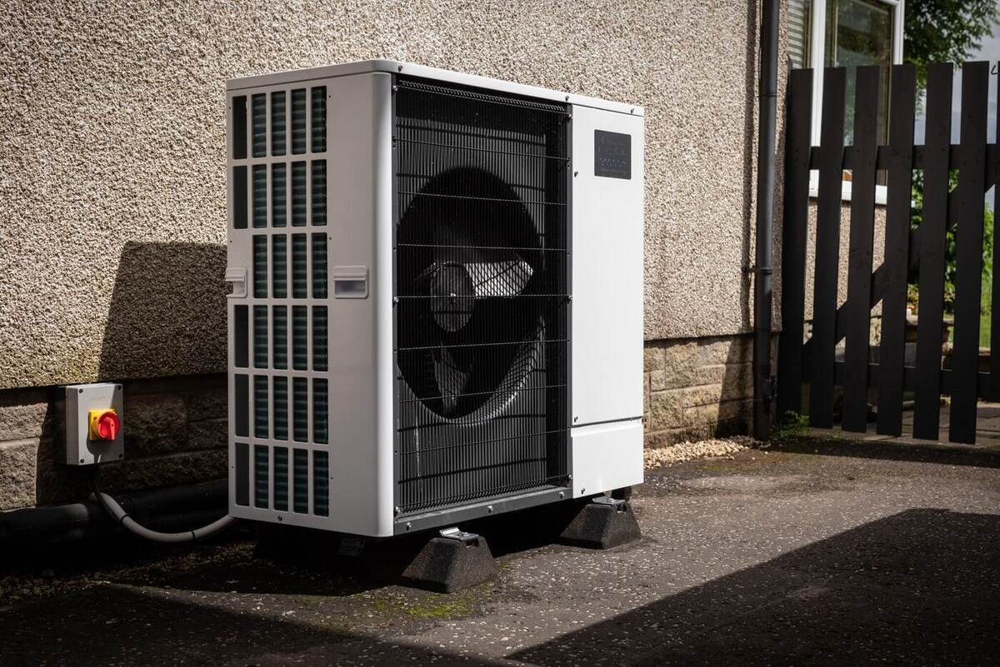

Is your heating system heat-pump ready?
A heat pump is only one part of the system. The building, emitters, pipework, controls and hot-water arrangement determine how well it performs.

Start with room-by-room heat loss
Heat loss establishes what each room needs under the chosen design conditions. It provides the basis for selecting radiators, underfloor-heating outputs and system temperatures instead of relying on guesswork.
Emitter output matters
Radiators deliver less heat as water temperature falls. Existing emitters may be suitable, may need upgrading, or may be supported by underfloor heating. The answer should come from calculation rather than assuming every radiator must change.
Distribution and controls
Pipe sizing, available flow, hydraulic resistance, zoning and control strategy all influence stable operation. The goal is a system that can deliver the required heat at the lowest practical flow temperature.
Plan the hot water
Cylinder capacity, recovery, coil performance and household demand should be considered alongside space heating. Plant space and electrical requirements also need early coordination.
Planning low-temperature heating?
CA2 can review the system as a complete design.
Book a consultationExplore mechanical services